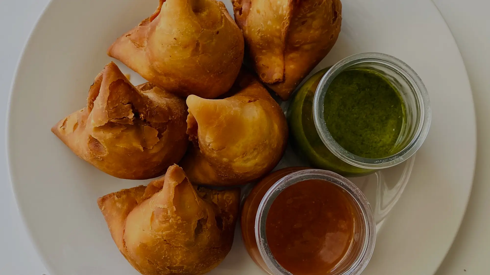

Gujarati chutney
Lasan-Dhaniya
Lehsun aur dhaniya ki teekhi hari chutney, fafda-jalebi wali Gujarati style mein.
Saamagri
- 1 cup dhaniya patte
- 6-8 lehsun ki kaliyan
- 3-4 hari mirch
- 1 nimbu ka ras
- 1/2 tsp jeera
- swaad anusaar namak
- 1/2 tsp cheeni
Banane ka tareeka
- Dhaniya dhokar kat lo.
- Mixer mein lehsun, hari mirch, jeera, namak, cheeni aur dhaniya daalo.
- Mota-mota peeso, thoda paani daal kar zarurat ho to.
- Nimbu ka ras milao aur chakh kar teekhapan theek karo.
Chef ke tips
- Lehsun kam kar do to swaad halka ho jaata hai.
- Fafda ke saath ye aur kadhi jaisi papdi chutney zaroor parosao.
- Rang hara rakhne ke liye dhaniya aakhir mein daalo.
Kis ke saath khayein
Dhokla →Handvo →Fafda →Khandvi